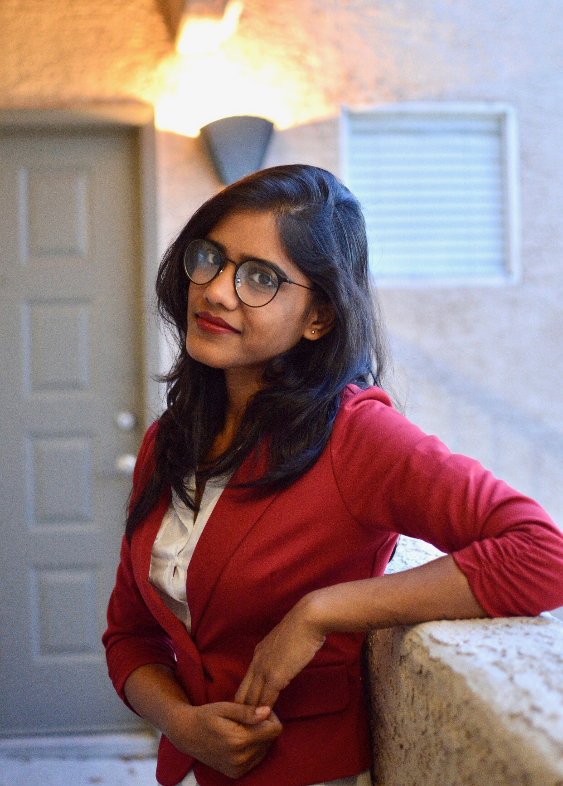

|  |
PriyaFront End UI Developer and an ameture Artist I love Coffee and exploring places and things |
| Year | School/University |
|---|---|
| 2009-2013 | V R Siddhartha Engineering Collage |
| 2013-2015 | SRM University |
| Web Technologies | HTML, HTML 5, Cascading Style Sheets (CSS), CSS3, SASS, JavaScript, JQuery, ReactJS, Redux, ECMASCRIPT6, JSON, AJAX |
| Framework | Bootstrap, ReactJS, Node.js |
| IDE | Visual Studio Code, Sublime, Atom |
| Operating Systems | Windows, Mac OS (Mojave) |
| Tools | Git, VS Code, SQL Developer, Postman, JIRA, SourceTree, Outlook, Word, Powerpoint, Excel. |
| Back-End and Database | NodeJS, Express, SQL, Mongoose, MongoDB |